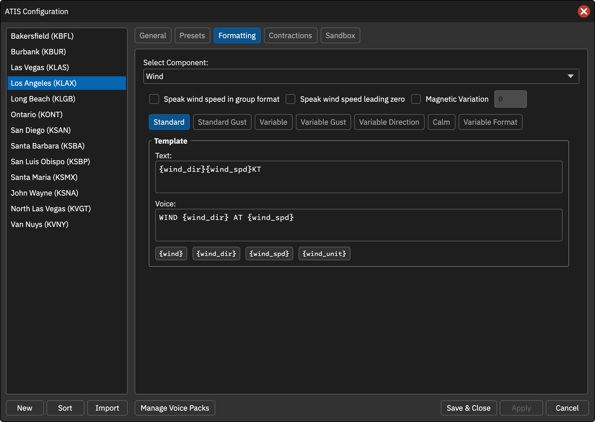
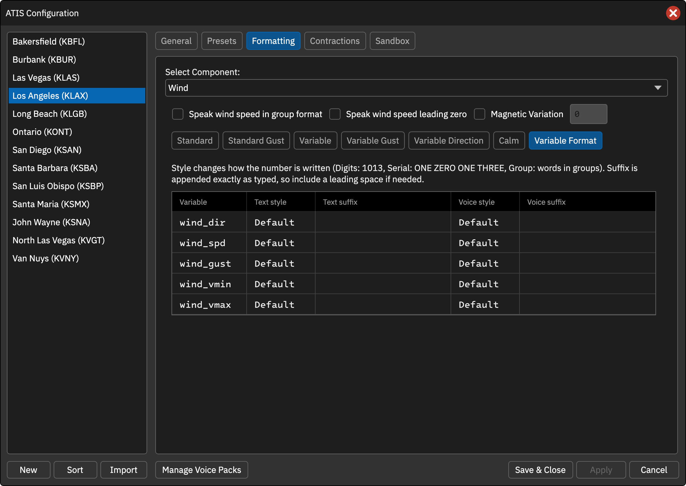

本页目录
地面风
在预设中使用 [WIND] 或 [SURFACE_WIND]。可分别设置常规风、带阵风、VRB 风、VRB 阵风、变化风向及静风模板。
基本选项
- Speak wind speed leading zero：05 读作 ZERO FIVE，而非 FIVE。
- Speak wind speed in group format：25 读作 TWENTY-FIVE，而非 TWO FIVE；启用时不能同时读前导零。
- Magnetic Variation：对
{wind_dir}、{wind_vmin}、{wind_vmax}应用所设磁差；文字和语音均调整。完整{wind}仍显示原报。 - Calm Wind Speed：Calm 标签页设置静风阈值。风速小于等于阈值（原报单位），或风向风速均为零时使用静风模板，默认阈值 2。
模板变量
| 变量 | 说明 |
|---|---|
{wind} |
完整风组，仅文字，如 25010G15KT 250V280 |
{wind_dir} |
风向 |
{wind_spd} |
风速，支持 {wind_spd\|kt} / {wind_spd\|mps} 换算 |
{wind_gust} |
阵风，支持 kt / mps 换算 |
{wind_vmin} |
变化风向第一端点 |
{wind_vmax} |
变化风向第二端点 |
{wind_unit} |
单位，文字如 KT、语音如 KNOTS |
文字风速位数
默认两位。对风速、阵风及换算形式可追加 : 和 #：
| 模板 | 数值 9 的结果 |
|---|---|
{wind_spd} |
09 |
{wind_spd:#} |
9 |
{wind_spd:##} |
09 |
{wind_spd:###} |
009 |
语音忽略该位数格式。示例：{wind_spd|kt:#}。
Variable Format
分别为风向、风速、阵风和风向端点设置文字/语音 Style 与 Suffix。换算形式与基础变量共用设置。Default 使用内置数字/逐位词语，Digits 为数字，Serial 逐位，Group 成组；后缀按原样追加。
操作截图参考
以下为上游原版截图，保留英文标签。用于定位操作；品牌、登录字段与网络行为以本页 CAN 说明为准。

